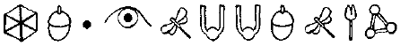

MURMANSK, KUZEY RUSYA, İKİ YIL ÖNCE
İki Rus alev alev yanan bir varilin önünde birbirlerine sokulmuş, Kuzey Kutbunun soğuğundan boş yere korunmaya çalışıyorlardı. Kola Körfezi eylülden sonra bulunmak isteyeceğiniz bir yer değildi, özellikle de Murmansk. Murmansk’ta kutup ayıları bile atkı takarlardı. Hiçbir yer buradan daha soğuk değildi, belki de yalnızca Noril’sk dışında.
Bunlar Mafya’nın tekikçileriydi ve gecelerini çalıntı BMW’lerin içinde geçirmeye alışıktılar. İçlerinden daha iri yarı olan Mikhael Vassikin kürk paltosunun kolunun altından sahte Rolex’ine baktı.
“Bu şey donabilirdi,” dedi saatinin kenarına yavaşça vurarak. “Sonra onu ne yaparım ben?”
“Söylenmeyi bırak,” dedi adı Kamar olan. “Zaten, senin yüzünden dışarıda kaldık.”
Vassikin duraksadı. “Efendim?”
“Verilen emir çok basitti: Fowl Star’ı batır. Tek yapman gereken kargo bölümünü havaya uçurmaktı. Tanrı bilir ki o yeterince büyük bir gemiydi. Kargo bölümünü havaya uçur, batsın. Ama yok, büyük Vassikin ne yaptı, gitti gemiyi kıçından vurdu. Hem de işi bitirmek için yedek bir roketi bile olmadan. Bu yüzden şimdi hayatta kalan var mı diye araştırmalıyız.”
“Sonuçta battı, değil mi?”
Kamar omuz silkti. “Ne olmuş yani? Çok yavaş battı, bir sürü yolcunun bir şeylere tutunacak zamanı oldu. Ünlü keskin nişancı, Vassikin! Büyük annem bile daha iyi atış yapardı.”
Mafya’nın rıhtımın üzerinde duran adamı, Lyubkhin tartışma tam bir ağız dalaşına dönüşmeden, onların yanma yaklaştı.
“Nasıl gidiyor?” diye sordu ayıyı andıran Yakut.
Vassikin iskelenin duvarına tükürdü. “Nasıl gitsin? Bir şey buldun mu?”
“Birkaç ölü balıkla, kırık sandıklar,” dedi Yakut, tetikçilere içinden dumanlar tüten birer fincan uzatarak. “Canlı bir şey yok. Sekiz saatten fazla oldu. Green Burnuna kadar her yeri araştıran sağlam adamlarım var.”
Kamar içecekten bir yudum aldı, sonra midesi bulanarak ağzındakini tükürdü. “Bu da ne böyle? Zift mi?”
Lyubkhin güldü. “Sıcak Kola. Fowl Star’dan. Sandıklar dolusu kıyıya vuruyor. Bu gece gerçekten de Kola Körfezindeyiz.”
“Seni uyarıyorum,” dedi Vassikin, içeceği karların üzerine dökerek. “Bu hava sinirlerimi bozuyor. Bu yüzden kötü şakalarına bir son ver. Zaten Kamar’ı dinlemek zorunda kalmak bana yetiyor.”
“Uzun sürmeyecek,” diye mırıldandı ortağı. “Son bir tarama daha ve araştırmayı bitiriyoruz. Bu sularda hiçbir şey sekiz saat dayanamaz.”
Vassikin boş fincanını uzattı “Daha sert bir şeyin yok mu? Soğuktan korunmak için bir duble votka falan? Her zaman bir yerlerde bir cep şişesi bulundurduğunu biliyorum.”
Lyubkhin pantolonunun cebine uzandı ama kemerindeki telsiz parazit yapınca durdu. Üç kısa patlama.
“Üç çığlık. İşaret bu.”
“Neyin işareti?”
Lyubkhin rıhtımın sonuna doğru koşarken başını arkaya çevirip bağırdı. “Telsizde üç cıyaklama. Bu K9 birimi birisini buldu demek.”
Kurtulan kişi Rus değildi. Bu giysilerinden anlaşılıyordu. Bir moda tasarımcısının imzasını taşıyan takım elbisesinden deri paltosuna kadar her şeyi Batı Avrupa’dan, hatta belki de Amerika’dan satın alınmıştı. Her şey üzerine göre dikilmiş ve en kaliteli malzemelerden yapılmıştı.
Adamın giysileri sağlammış gibi görünse de bedeni o kadar iyi durumda değildi. Çıplak ayaklarıyla elleri soğuktan donmak üzereydi. Bacaklarından biri garip bir şekilde, diz altından gevşekçe sarkıyordu ve yüzünde korkunç yanık izleri vardı.
Araştırma ekibi onu limanın üç kilometre güneyindeki, derin bir dere çukurundan buraya eğreti bir branda sedyeyle taşımışlardı. Adamlar çizmelerinin içine işlemiş soğuğa karşı koymak için ayaklarını hızla yere vurarak ödüllerinin çevresini sardılar. Vassikin kalabalığı dirseğiyle yararak ilerledi ve adamı daha yakından görmek için diz çöktü.
“Bacağını kaybedeceği kesin,” diye belirtti. “Birkaç parmağını da. Yüzü de pek iyi görünmüyor.”
“Teşekkürler, Doktor Mikhael,” diye eleştirdi Kamar, sertçe. “Herhangi bir kimlik var mı?”
Vassikin bir hırsız gibi ellerini hızla adamın bedeninde gezdirdi. Cüzdan ve saat taraması yaptı.
“Hiçbir şey yok. Çok garip. Böylesine zengin bir adamın kişisel eşyaları olmalı, değil mi?”
Kamar başını salladı. “Evet, öyle.” Sonra adamlara döndü. “Tam on saniyeniz var, sonra başınız belaya girecek. Para sizde kalsın, geriye kalan her şeyi istiyorum.”
Gemiciler sözlerini ciddiye aldılar. Adam pek iri yarı değildi. Ama Mafya’dandı, Rus organize suç sendikasından.
Deri bir cüzdan kalabalığın arasından uçup branda bezinden yapılmış sedyenin üzerine kondu. Birkaç saniye sonra yanında Cartier bir saat belirdi. Altın, pırlanta taşlıydı. Orta direk bir Rus’un beş senelik maaşı değerindeydi.
“Akıllıca bir karar,” dedi Kamar, sahipsiz hâzineyi eline alarak.
“Pekala?” diye sordu Vassikin. “Adamı tutuyor muyuz?” Kamar oğlak derisi cüzdanın içinden platin kredi kartını çıkarıp adına baktı. '
“Ah, tutuyoruz,” diye karşılık verdi, cep telefonunu açarak. “Onu tutuyor ve hatta üzerine birkaç battaniye örtüyoruz. Bizdeki bu şansla, yakında zatürree de olur. Ve inanın bana, bu adamın başına hiçbir şey gelmesini istemeyiz. O bizim yeni dünyaya biletimiz.”
Kamar giderek heyecanlanıyordu. Bu hiç de ona göre bir davranış değildi.
Vassikin güçlükle doğruldu. “Kimi arıyorsun? Kim bu adam?”
Kamar telefonundaki hızlı arama listesinden bir numara seçti. “Britva’yı arıyorum. Kimi aradığımı sanıyorsun?” Vassikin’in beti benzi attı. Patronu aramak tehlikeliydi. Britva kötü habercileri vurmakla tanınırdı. “İyi bir haber, değil mi? Onu iyi bir haber vermek için mi arıyorsun?”
Kamar kredi kartını ortağına fırlattı. “Oku şunu.” Vassikin uzun süre kartı inceledi. “Ben Angliskii okuyamam. Ne yazıyor? Adı neymiş?”
Kamar ona söyledi. Mikhael’in yüzü hafif bir gülümse meyle aydınlandı. “Çevir şu telefonu,” dedi.